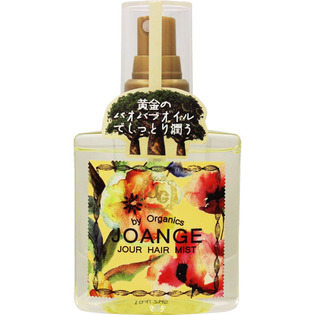

返回列表
产品名称：ジョアンジュ オーガニック ジュールヘアミスト

ビー・エス・ピー ジョアンジュ オーガニック ジュールヘアミスト １２０ｍｌ
メーカー ビー・エス・ピー
JANコード 4540688951417
商品の特徴
バオバブオイルと3種の天然オイルを配合したヘアケアシリーズ。
ピュアリリーの香りがふんわりと包みこむ、洗い流さないトリートメントです。
成分・分量
＜成分＞
シクロペンタシロキサン、フェニルトリメチコン、安息香酸アルキル（C12-15）、バオバブ種子油、ヒマワリ種子油、オリーブ油、ユズ種子油、トコフェロール、パルミチン酸アスコルビル、香料
用法及び用量
-